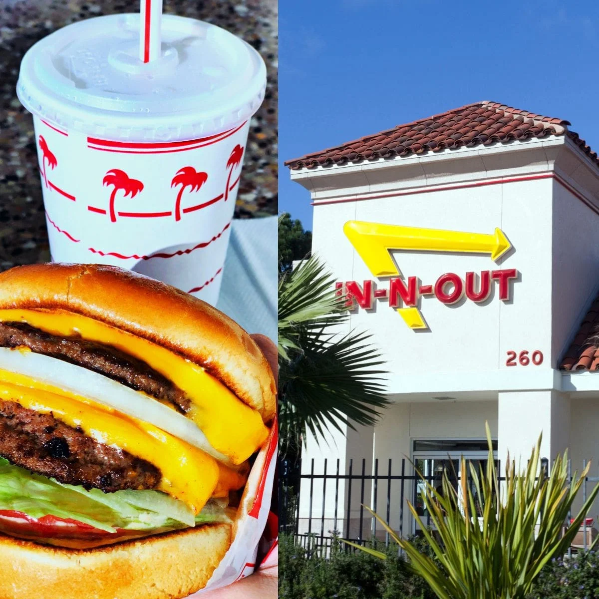
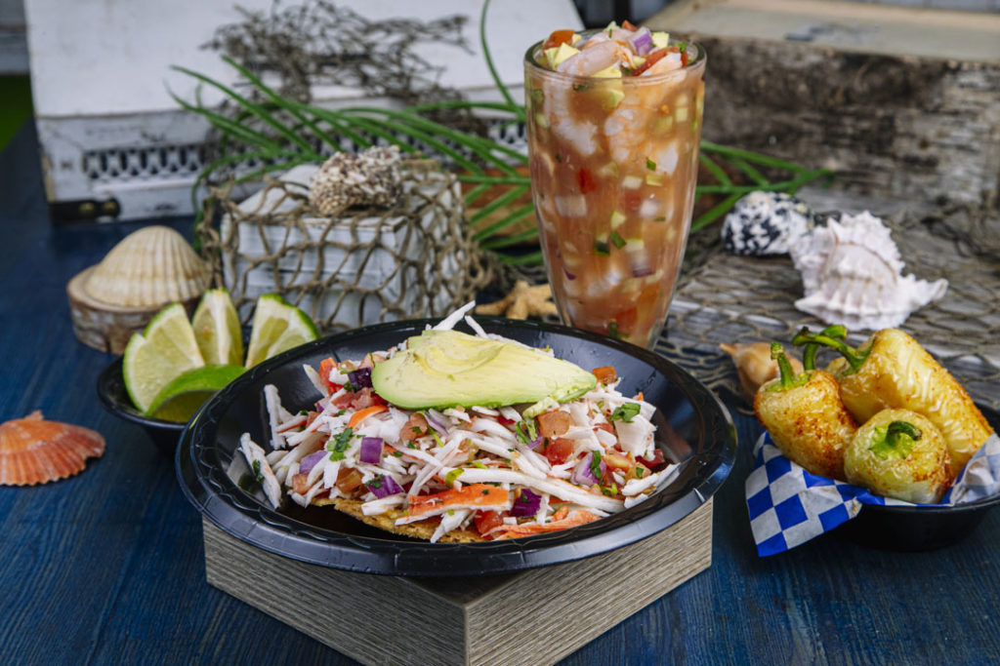
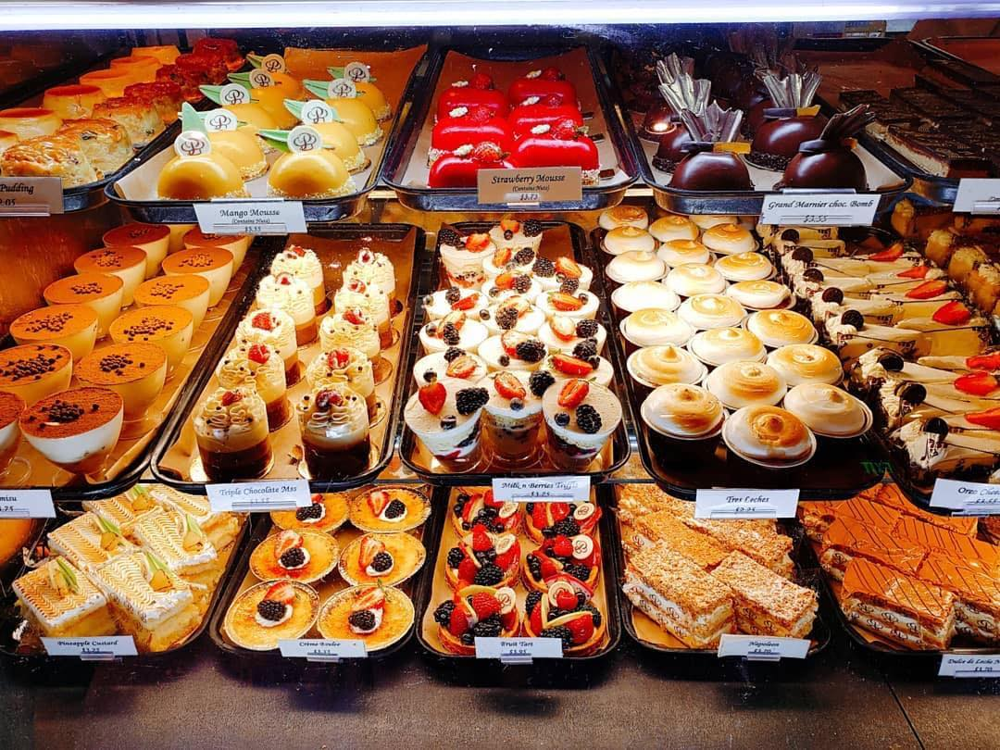

Food in California
-
In-N-Out Burger
In-N-Out Burger is a famous fast-food chain known for its delicious burgers, fresh ingredients, and classic American drive-thru experience. It originated in California and has gained a cult following for its simple yet tasty menu and high-quality ingredients.
Service hours: Varies by location
Address: Multiple locations throughout California and other states
More information: In-N-Out Burger Official Website
-
Encendada's Surf and Turf Grill
Encendada's Surf and Turf Grill is a popular restaurant located in Malibu, California, known for its delicious surf and turf cuisine. The restaurant offers a diverse menu that includes a variety of seafood and meat options, such as grilled lobster, prime rib, fresh fish, and more.
Service hours: Lunch and dinner hours, varies by day
Address: Malibu, CA 90265
More information: Encendada's Surf and Turf Grill Official Website
-
Porto's Bakery and Cafe
Porto's Bakery and Cafe is a famous Cuban bakery and cafe located in Los Angeles, California, known for its delicious pastries, cakes, and savory treats. The bakery offers a wide selection of baked goods, including Cuban pastries, croissants, sandwiches, and custom cakes, all made with high-quality ingredients and traditional recipes.
Service hours: Varies by location
Address: Multiple locations throughout Southern California
More information: Porto's Bakery and Cafe Official Website